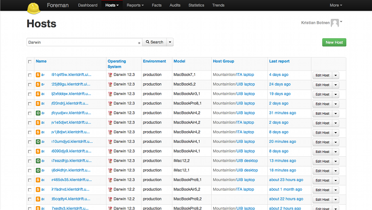
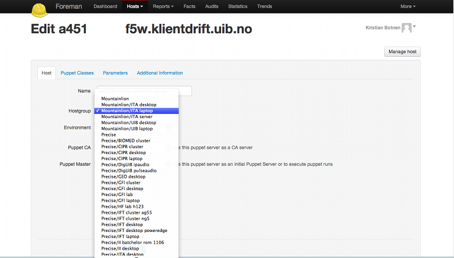

Puppet
Opensource Automation Software
Presentation by Kristian Botnen
A brief history
- ssh looping as a configuration tool
- closed source, high cost software from a big vendor
- no central repository for configuration items
- no central oveview of nodes and state
What is puppet?
Facter discover things about the host its running on
ac01j8wt:staffmobilityweek2013 kbotnen1$ facter architecture => x86_64 domain => klientdrift.uib.no facterversion => 1.6.12 fqdn => ac01j8wt.klientdrift.uib.no hardwareisa => i386 hardwaremodel => x86_64 hostname => ac01j8wt id => kbotnen interfaces => lo0,gif0,stf0,en0,p2p0,en1 ipaddress => 1x.1xx.1x.1xx ipaddress6 => ipaddress6_en1 => ipaddress_en1 => 1x.1xx.1x.1xx ipaddress_lo0 => 127.0.0.1 ... is_virtual => false kernel => Darwin swapfree => 745.09M swapsize => 4096.00M timezone => CEST uptime => 10 days uptime_days => 10 uptime_hours => 257 uptime_seconds => 926978 virtual => physical ac01j8wt:staffmobilityweek2013 kbo041$
Hiera is external variable lookups
packages:
augeas-lenses: { ensure: installed }
augeas-tools: { ensure: installed }
chromium-browser: { ensure: installed }
apt_sources:
puppetlabs:
location: http://apt.puppetlabs.com/
release: precise
include_src: false
pklocalauthority_aptadmin: admin
pklocalauthority_aptmanager: ansatt
updateconfig_packageblacklist:
- puppet
- facter
- vim-puppet
print_manage_printers: false
print_manage_printers_partially: false
print_manage_config: true
print_manage_configfilename: legacy_cupsd.conf.linux.erb
Puppet is the glue
How it works?
- define desired state for your infrastructure
- configuration is code which accomodate versioncontrol
- you tell what you need, puppet takes care of how
Example of creating a user
class accounts ($uid,$realname,$pass,$username,$status,){
define singleuser ($uid, $realname, $pass, $username, $status) {
user { $username:
ensure => $status,
uid => $uid,
gid => $username,
shell => '/bin/bash',
home => "/home/${username}",
comment => $realname,
password => $pass,
managehome => true,
require => Group[$username],
}
group { $username:
gid => $uid,
}
file { "/home/${username}":
ensure => directory,
owner => $username,
group => $username,
mode => 0711,
require => [ User[$username], Group[$username] ],
}
}
}
Example of creating a user
accounts::singleuser { 'Homer Simpson':
uid => 533,
realname => 'Homer Simpson',
pass => 'asuperlongandcomplexpasswordhashwithsalt',
username => 'homer',
status => 'present',
}
will probably work on mac, FreeBSD and various Linux flavors
puppet is also used on windows and openbsd
Puppet modules
- accounts in the previous slide is a module
- a lot of modules are available from puppetlabs and the community
- not all modules are of good quality
- written in a declarative "ruby-like" language
- allows inline ruby
- Puppet forge http://forge.puppetlabs.com
- Github https://github.com
Module development at UIB
- foreman and redmine appstack
- galicaster for DigUIB
- crypt, munki, cups, ha-proxy, +++
- app developers write puppetmodules and submit to QA
- ... and hopefully it makes it to production
Example of module use, Foreman server
1 node 'aserver.uib.no' {
2 class { 'platform::el6::base':
3 env => 'prod'
4 }
5
6 class { 'app::web::foreman':
7 service_name => 'foremangui.uib.no',
8 backend => pgsql,
9 ssl_host => $::fqdn
10 }
11 }
Puppet infrastructure at UIB
- 6 puppetmasters, dev test and production
- 4 external node classifiers (foreman), test and production
- servermachines and clientmachines are separated
Node classification
- Foreman makes it easy to classify new nodes
- We classify into group based on faculty and deptartment
- Configuration items (i.e packages) are tied to groups
- Foreman is ruby too
Foreman list all managed hosts
Foreman list host details

Foreman classification into group
Shared infrastructure, shared configuration code
- Redhat, Ubuntu and Mac deploys from the same infrastructure
- Redhat, Ubuntu and Mac use the same configuration codebase
- Redhat, Ubuntu and Mac use the same gui for classification